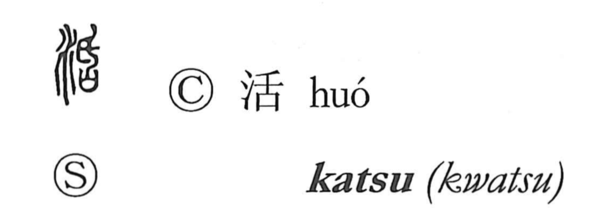

活

Kun: ikiru, ikasu | On: katsu
to live ・ vitality ・ lively ・ resuscitation
Explanation
活 combines 水, water, with the sound element 舌. Here 舌 continues the older form 𠯑: a small handled blade brought against a vessel containing a prayer. Piercing or scraping the vessel destroyed the prayer’s power. The action was vigorous, and 活活 could express its repeated scraping sound.
The same repeated sound describes water flowing energetically. With 水, 活 brings this lively motion into the world of water: something moves with force and has the energy to keep moving. From that vitality come ‘live,’ ‘be active,’ and ‘revive.’ Applied to another person or thing, the character can mean to sustain life or bring something into effective use.